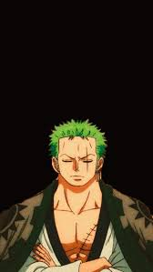

One Piece
Released: December 24, 1997
Genre: Adventure, Fantasy, Action
One Piece follows Monkey D. Luffy, a boy who gains the ability to stretch like rubber after eating a Devil Fruit. Inspired by the pirate Shanks, he sets sail to find the legendary treasure "One Piece" and become the Pirate King.
Throughout his journey, Luffy forms the Straw Hat Pirates, a crew with their own dreams. Together, they travel the Grand Line, battling enemies, uncovering secrets, and forging unbreakable bonds of friendship.
Cast

Luffy
Voice: Mayumi Tanaka

Robin
Voice: Yuriko Yamaguchi
Zoro
Voice: Kazuya Nakai

Sanji
Voice: Hiroaki Hirata